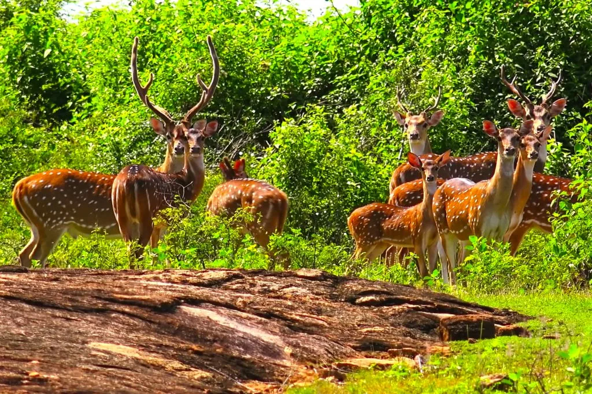

| Venue Name | Map | Image | Venue Description |
|---|---|---|---|
| Yala National Park | This park ranked as the wildlife preserves in Sri Lanka and it's one of the popular travel destinations in the world as well. "Elusive Lepoard" is the center of attention in this sanctuary. | ||
| Wilpattu National Park | This park spreads over 131,693 hectares.There are 50 wetlands in this reserve and they are labelled as "Villus".A Villu can be defined as shallow natural lake toped off with fresh rainwater and covered by open grassy plains. | ||
| Udawalawe National Park |  | This wildlife preserve is positioned on the boundary of Sabaragamuwa and Uva Provinces of Sri Lanka.This park provides a shelter for the exiled animals as result of the Udawalwe Resorvior construction. | |
| Contents of this table are updated on a regular basis. | |||
Yala National Park
This park ranked as the wildlife preserves in Sri Lanka and it's one of the popular travel destinations in the world as well. "Elusive Lepoard" is the center of attention in this sanctuary.
Wilpattu National Park
This park spreads over 131,693 hectares.There are 50 wetlands in this reserve and they are labelled as "Villus".A Villu can be defined as shallow natural lake toped off with fresh rainwater and covered by open grassy plains.
Udawalawe National Park
This wildlife preserve is positioned on the boundary of Sabaragamuwa and Uva Provinces of Sri Lanka.This park provides a shelter for the exiled animals as result of the Udawalwe Resorvior construction.
| Animal / Plant Name | Habitat | Image | Food |
|---|---|---|---|
| Ceylon Stainwood | Yala National Park | Sunlight, water and natural decendants. | |
| Sir Lankan Leopard | Yala National Park | Raw meat | |
| Kumbuk | Wilpattu National Park | Sunlight, water and natural decendants | |
| Sri Lankan Keelback | Wilpattu National Park | Raw meat | |
| Hopea Cordifolia | Udawalawe National Park | Sunlight, water and natural decendants | |
| Ceylon Suprfowl | Udawalawe National Park | Insects, worms and plants | |
| Contents of this table are updated on a regular basis. | |||
Plant Name:- Ceylon Stainwood
Habitat:- Yala National Park
Food:- Sunlight, water and natural decendants.
Animal Name:- Sir Lankan Leopard
Habitat:- Yala National Park
Food:- Raw meat
Plant Name:- Kumbuk
Habitat:- Wilpattu National Park
Food:- Sunlight, water and natural decendants.
Animal Name:- Sri Lankan Keelback
Habitat:- Wilpattu National Park
Food:- Raw meat
Plant Name:- Hopea Cordifolia
Habitat:- Udawalawe National Park
Food:- Sunlight, water and natural decendants.
Animal Name:- Ceylon Suprfowl
Habitat:- Udawalawe National Park
Food:- Insects, worms and plants